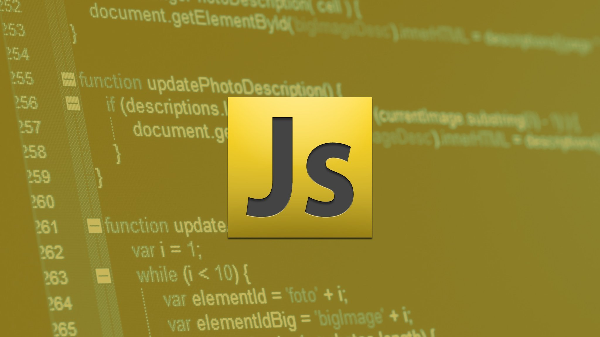

JavaScript (/ˈdʒɑːvɑːˌskrɪpt/; аббр. JS /ˈdʒeɪ.ɛs./) — мультипарадигменный язык программирования. Поддерживает объектно-ориентированный, императивный и функциональный стили. Является реализацией спецификации ECMAScript (стандарт ECMA-262[7]).
Не следует путать с Java.
Не следует путать с JScript.
Язык программирования JavaScript пользуется довольно высокой популярностью сегодня. Связано это с тем, что его можно использовать как для создания динамичности статических веб страниц, так и для написания полноценных приложений SPA и даже компьютерных игр. Правда, последнее сегодня реже встречается ввиду того, что игры пишутся на других языках.
Немного истории

Первые предпосылки для появления этого языка появились еще в 1992 году, когда была начата разработка скриптового встраиваемого языка Cmm (Си минус минус). Позже он был переименован в ScriptEase, так как название Си минус минус имело негативный оттенок. В целом. Перед тем, как язык обрел свое современное имя, его название менялось еще несколько раз.
В 1995 году Брендан Эйх получил задачу внедрить язык программирования в браузер Netscape. Изначально язык назывался Mocha, затем LiveScript. Наконец, он получил свое современное имя – JavaScript. Здесь разработчики пошли на хитрость. В то время, когда они занимались улучшением LiveScript, довольно большой популярностью пользовался язык Java. Для того, чтобы привлечь больше разработчиков для работы с новым языком, было решено использовать в его названии Java. В итоге получился JavaScript.
Последняя на сегодняшний день версия языка ES6 вышла в 2015 году. С ее появлением язык обрел вторую жизнь. Появились новые стандарты, а также возможность работы с константами. Претерпел изменения и сам код. Язык придерживается принципа сокращения кода при большей функциональности.
Краткий обзор языка JavaScript
Особенности языка JS
К основным особенностям этого языка программирования относятся:
- Динамическая типизация. То есть тип данных будет определяться только тогда, когда переменной или const будет присваиваться ее значение.
- Гибкая работа с функциями. В JS функции можно не только выполнять, но еще и возвращать функции из функций, передавать функции в качестве параметров другим функциями и присваивать функции в качестве значения переменных.
- JavaScript поддерживается всеми современным браузерами.
- Объектно-ориентированное программирование. То есть это такая методология программирования, в которой вся программа представляется в виде совокупности объектов.
Помимо этого, важной особенностью JavaScript является его развитая инфраструктура. На сегодняшний день разработчики могут работать с большим количеством библиотек и фреймворков (наиболее популярными из них являются React, Angular и Vue), несколькими сборщиками, вспомогательными библиотеками (например, Lodash) и генераторами статических сайтов.
Сферы применения языка JS
Что касается сфер применения, в первую очередь, язык JavaScript широко используется в веб-разработке. Причем работает он в сочетании с HTML и CSS. С помощью JS можно создавать любые браузерные приложения. Например, калькулятор расчета кредита, который можно видеть на сайтах большинства банков, также создан с помощью JavaScript.
Причем вся визуальная часть этого калькулятора – это сочетание HTML+CSS. То есть кнопки, диаграммы, ползунки – это статические элементы. С помощью JS все то анимируется, а также проводятся все основные расчеты.
Еще один пример – форма подписки или регистрации. Она создана на HTML+CSS. Однако взаимодействие с сервером обеспечивается именно благодаря JS. Помимо этого, на языке JavaScript можно создавать следующие программы и приложения:
- Разработка программного обеспечения для мобильных устройств (с помощью React Native).
- Разработка серверных решений с помощью Node.js.
- Создание десктопных приложений. JS используется, например, в приложениях, созданных компанией Adobe.
- Программирование бытовой техники и платежных терминалов.
Преимущества и недостатки JS
Популярность JavaScript обусловлена множеством факторов, в том числе большим количеством преимуществ, к которым относятся:
- Незаменимость при разработке веб сайтов и приложений. Как уже отмечалось выше, JS поддерживается всеми современными браузерами. Причем язык легко интегрируется с версткой и сервером.
- Высокая скорость работы и производительность. Этот язык позволяет частично обрабатывать веб страницы на стороне пользователя. Это позволяет тратить меньше времени на открытие, а также снижает нагрузку на серверы.
- Большое количество инструментов и богатая инфраструктура. Если в первое время многие работали исключительно с самим языком, сегодня благодаря наличию множества библиотек, появились удобные и доступные для всех инструменты.
- Относительная простота. Написание программ занимает обычно меньше времени. При этом, объем кода также обычно меньше, в сравнении со многими другими языками.
- Широкие возможности для веб-страниц. С помощью JS вы можете оживить любую страницу в сети Интернет. Помимо этого, JS значительно повышает уровень юзабилити приложений и сайтов.
- Относительная легкость изучения. Начать учиться JS можно даже тем, кто вообще до этого не сталкивался с программированием. Причем визуализация многих действий прибавляет обучающимся энтузиазма.
Что касается недостатков, к ним можно отнести следующие моменты:
- Отсутствует возможность загрузки и чтения файлов.
- Нестрогая типизация. Все недостатки кода выявляются на этапе работы программы, что может быть неудобно в ряде случаев. К тому же, нестыковки, которые могут быть в коде JS игнорируются самим языком.
- Уровень безопасности. В такой язык программирования как JS достаточно просто внедрить вредоносный код.
Примеры кода на JavaScript
Для того, чтобы оценить все прелести этого языка программирования, приведем простой пример кода на JS:
console.log (Привет, мир!)
Что делает эта строка? С ее помощью вы сможете в консоли браузера или среды разработки вывести надпись «Привет, мир!». Как видно, это очень простое решение, требующее всего одной строки кода. Такая простота отличает JS от многих других языков программирования, в которых для вывода этой надписи потребуется больше кода.
Все переменные в JavaScript объявляются с помощью ключевого слова var. При объявлении тип переменной не указывается. Этот тип присваивается переменной только тогда, когда ей присваивается какое-либо значение.
Например:
var а; var а=13, A=22, b="Строка";
Версии:
| JavaScript | Соответствующая версия JScript | Существенные изменения |
|---|---|---|
| torrentfreak.com | ||
| 1.0 (Netscape 2.0, март 1996) | 1.0 (ранние версии IE 3.0, август 1996) | Оригинальная версия языка JavaScript. |
| 1.1 (Netscape 3.0, август 1996) | 2.0 (поздние версии IE 3.0, январь 1997) | В данной версии был реализован объект Array и устранены наиболее серьёзные ошибки. |
| 1.2 (Netscape 4.0, июнь 1997) | Реализован переключатель switch, регулярные выражения. Практически приведён в соответствии с первой редакцией спецификации ECMA-262. | |
| 1.3 (Netscape 4.5, октябрь 1998) | 3.0 (IE 4.0, октябрь 1997) | Совместим с первой редакцией ECMA-262. |
| 1.4 (только Netscape Server) | 4.0 (Visual Studio 6, нет версии IE) | Применяется только в серверных продуктах Netscape. |
| 5.0 (IE 5.0, март 1999) | ||
| 5.1 (IE 5.01) | ||
| 1.5 (Netscape 6.0, ноябрь 2000; также поздние версии Netscape и Mozilla) | 5.5 (IE 5.5, июль 2000) | Редакция 3 (декабрь 1999). Совместим с третьей редакцией спецификации ECMA-262. |
| 5.6 (IE 6.0, октябрь 2001) | ||
| 1.6 (Gecko 1.8, Firefox 1.5, ноябрь 2005) | Редакция 3 с некоторыми совместимыми улучшениями: E4X, дополнения к Array (например, Array.prototype.forEach), упрощения для Array и String | |
| 1.7 (Gecko 1.8.1, Firefox 2.0, осень 2006), расширение JavaScript 1.6 | Редакция 3, с добавлением всех улучшений из JavaScript 1.6, генераторов и списочных выражений (англ. list comprehensions, [a*a for (a in iter)]) из Python, блоковых областей с использованием let и деструктурирующего присваивания (var [a, b] = [1, 2]) | |
| JScript .NET (ASP.NET; нет версии IE) | (Считается, что JScript .NET разработан при участии других членов ECMA) | |
| 1.8 (Gecko 1.9, Firefox 3.0, осень 2008), расширение JavaScript 1.7 | Новая форма записи для функций, сходная с типичными лямбда-выражениями, генераторы, новые методы итеративной обработки массивов reduce() и reduceRight(). | |
| 1.8.1 (Gecko 1.9.1, Firefox 3.5) | Встроенная поддержка JSON, метод getPrototypeOf() у Object, методы trim(), trimLeft(), trimRight() у String | |
| 2.0 | Редакция 4 (разработка не закончена, название зарезервировано ECMA, но не было использовано для публикации) | |
| Редакция 5 (ранее известная под названием ECMAScript 3.1. Финальная версия принята 3 декабря 2009 года.) | ||
Теги
- <!DOCTYPE html>
- <html>
- <head>
- <meta>
- <title>
- <link>
- <body>
- <h1>
- <h2>
- <h3>
- <p>
- <ul>
- <ol>
- <li>
- <a>
- <strong>
- <i>
- <em>
- <section>
- <div>
- <b>
- <img>
- <pre>
- <span>
- <table>
- <thead>
- <tfoot>
- <tbody>
- <tr>
- <th>
- <td>
- <dfn>
- <sup>
CSS-свойства
- 'background'
- 'background-color'
- 'background-image'
- 'border'
- 'border-collapse'
- 'border-right'
- 'border-radius'
- 'border-top'
- 'border-top-style'
- 'border-bottom'
- 'border-bottom-style'
- 'box-shadow'
- 'color'
- 'display'
- 'font-family'
- 'font-weight'
- 'font-style'
- 'font-size'
- 'height'
- 'list-style-type'
- 'list-style-image'
- 'letter-spacing'
- 'line-height'
- 'margin'
- 'margin-top'
- 'margin-right'
- 'margin-bottom'
- 'margin-left'
- 'padding'
- 'padding-top'
- 'padding-bottom'
- 'padding-left'
- 'padding-right'
- 'src'
- 'text-align'
- 'text-transform'
- 'text-decoration'
- 'text-decoration-color'
- 'text-shadow'
- 'vertical-align'
- 'width'
- 'word-break'